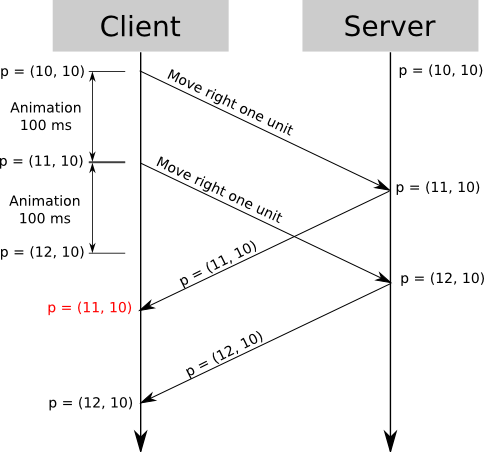

Peer-to-peer Multiplayer in Meteor
Videogames!
What does multiplayer mean?
- Clients can view & interact with a shared simulation
- Players may be competing, cooperating, or just messing about
- Interactions must be within the rules of the game - circumventing these rules is cheating
Many Worlds
- Servers can only support so many players at once
- Players are usually split between different servers
- Players are interacting with an instance of a world
Moving Out
Taking things off the server
- Move each instance of the world onto one or more of the client machines
- Use a lightweight server to coordinate clients
Deterministic Lockstep
The board game approach
- Game logic must be completely deterministic
- On every step, all players advance their simulations and announce their moves
- Works great over LAN
- Works terribly if any player suffers lag
Aims & Assumptions
- We want physics of some kind
- Devices will be of variable power
- The game should feel low-latency
- Players will drop in & out without warning
Aims & Assumptions
- Not every device supports WebRTC yet
- Server-hosted games worked pretty well 10 years ago
- Client-hosted games will have roughly twice the latency
- The average person's connection is roughly twice as fast as it was 10 years ago
Client/Host
The simple approach
- Host runs the simulation
- Clients subscribe to snapshots and send inputs to the host
- On each screen refresh, client renders the most recent snapshot
Client/Host
How it works
Players = new Mongo.Collection('Players')
Bodies = new Mongo.Collection('Bodies')
// Clients listen for snapshots from the host
SnapshotStream = new Meteor.Stream('Snapshot')
// Host listens for inputs from clients
InputStream = new Meteor.Stream('Input')
Client/Host
The snapshot
{
id: 5,
position: [ 432, 120 ],
angle: 75,
effects: [
'jetpack-boost'
]
}
Client/Host
The update function
if (isHost) {
world.step()
emitSnapshot()
} else {
updateView(mostRecentSnapshot)
}
render()
Client/Host with interpolation
The slightly more complicated approach
- Lower the send rate from the server
- Interpolate between snapshots on the client side
Client/Host with interpolation
The snapshot
{
id: 5,
position: [ 432, 120 ],
angle: 75,
velocity: [ 4, 9 ],
angularVelocity: 20,
effects: []
}
Client/Host
The Problems
- Players have to wait to see the results of their inputs
- Even with interpolation, dropped packets can mean total standstill
Client Side Prediction
The quite complicated approach
- Clients run their own simulations & predict the results of their inputs
- The host still simulates the world & maintains authority
- Where disagreements arise, the host's word is law
Client Side Prediction
The Interesting Problem
- On each input, the player reports their current state to the host
- The host replies with their 'real' state if they're wrong
- Applying this correction in the simplest manner would effectively send the player back in time
Client Side Prediction
Source: http://www.gabrielgambetta.com/fpm2.html
Client Side Prediction
The Tricky Solution
- Rewind time to when the disagreement occurred
- Correct the player's state
- Re-run all inputs since the disagreement in fast-forward
- Interpolate between player's predicted position and their corrected position
Client Side Prediction
Is it possible in Meteor?
- This technique works better if a simulation is deterministic
- Physics in Javascript is unlikely to be deterministic
- Client's state will probably need to corrected often, which could be unpleasant
True Peer-to-peer
WebRTC and no central host
- Players all run the simulation and inform each other of inputs directly
- Apart from the initial WebRTC handshakes, no data needs to pass through the server
- The simulation must be deterministic - there is no authoritative host to correct clients
- Cheating is much easier (especially with JS being run in the browser)
Mix & Match
What I will probably do
- Client/host with interpolation as a baseline
- Use unreliable WebRTC if supported
- Upgrade to client-side prediction if the device is powerful enough
- Reassess clients' hostability scores every so often
- Explore using WebRTC to communicate some info directly peer-to-peer